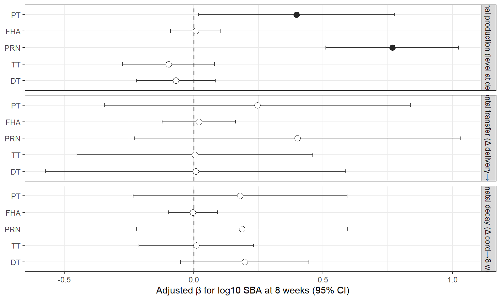
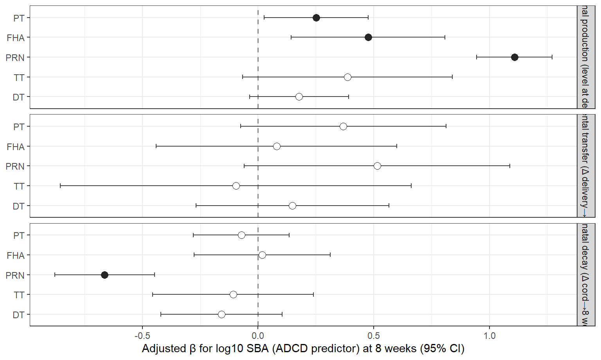

Our earlier analyses summarised each antigen’s IgG-subclass response as a single pro-inflammatory-to-tolerogenic ratio, log10[(IgG1+IgG3)/(IgG2+IgG4)], and related it to serum bactericidal activity (SBA) at 8 weeks. That ratio is a reasonable first pass, but it bundles together several biological and statistical assumptions that are worth making explicit before we extend the work.
The effector split itself is well grounded. Across the literature the functional hierarchy runs roughly IgG4 < IgG2 < IgG1 < IgG3 for complement fixation and activating-Fc3b3-receptor engagement: IgG1 and IgG3 are the strong mediators of complement- and Fc3b3R-dependent functions, IgG2 is a weak mediator tied to polysaccharide responses, and IgG4 has minimal effector capacity and can actively block IgG1/IgG3 complement activation while preferentially engaging the inhibitory receptor Fc3b3RIIb [10134]. This matters here because our readout is itself complement-mediated 014 SBA is complement-dependent bacterial killing 014 so placing the complement-fixing subclasses in the numerator and the non-complement-fixing IgG4 in the denominator is mechanistically defensible, and almost certainly explains why the ratio predicts SBA at all.
But the dichotomy is crude in ways that matter for this dataset:
Two consequences follow, and they define this analysis.
(2) Use a compositional balance rather than a linear-sum ratio. The four subclasses are parts of a whole and carry relative information, which is exactly the setting compositional data analysis (CoDA) was built for; naive ratios of parts have produced spurious correlations since Pearson (1897), and the principled fix is a log-ratio balance [1001313]. For the {IgG1,IgG3} vs {IgG2,IgG4} partition the isometric-log-ratio balance is
\[ b \;=\; \tfrac{1}{2}\big(\log \mathrm{IgG1} + \log \mathrm{IgG3}\big) \;-\; \tfrac{1}{2}\big(\log \mathrm{IgG2} + \log \mathrm{IgG4}\big), \]
i.e. a geometric-mean contrast that weights each subclass equally (so IgG3 counts as much as IgG1) and is scale-invariant. This is the same move the microbiome field made away from the crude Firmicutes/Bacteroidetes ratio toward CoDA balances [1101313].
Scale note (crucial for our arbitrary-unit assays). Each subclass is measured in its own arbitrary unit, so absolute balance values are not concentration-interpretable. However, a per-subclass unit change multiplies each subclass by a constant, i.e. adds a constant to its log 014 shifting \(b\) by a fixed offset that is identical for every subject. In a regression SBA ~ \(b\) (+ arm) that offset is absorbed by the intercept: the slope, its confidence interval and p value are unchanged. Stage deltas (\(b_{\text{to}}-b_{\text{from}}\)) cancel the offset entirely. So associations, ordering, \(\Delta R^2\) and proportion-mediated are all interpretable on ordinal data; only absolute balance levels and individual mediation path coefficients are not.
(6) Ask whether the balance acts through measured complement deposition, at every stage. Because SBA is complement killing, the sharpest mechanistic test is whether a polarisation signal predicts SBA through the antibody’s measured complement-deposition capacity (antigen-specific ADCD). Now that ADCD is available at the maternal and cord visits as well as the 8-week baseline, we can walk complement through the chain 014 at the maternal, cord and baseline nodes in turn 014 fitting balance 192 ADCD 192 SBA at each, so complement is analysed with the same stage machinery as the subclasses rather than at a single timepoint.
We work on the recoded, mixed-case chain frame produced by
load_serology_data() and compute, for each antigen and
visit, the balance \(b\) above
(add_subclass_balances()). Antigens comprise the three
pertussis targets (PT, FHA, PRN) plus the two shared vaccine-control
toxoids, tetanus toxoid (TT) and diphtheria
toxoid (DT). TT and DT serve as a specificity check: because
the outcome (SBA) is bactericidal killing of B pertussis, a
pertussis-specific mechanism should show the balance192SBA and
balance192ADCD192SBA signal for PT/FHA/PRN but not for TT/DT;
association of the toxoid balances with SBA would instead point to a
nonspecific, global IgG-polarisation effect. We then run two
measures in parallel through the same stage machinery 014 the
subclass balance and antibody-dependent complement deposition (ADCD) 014
decomposing the maternal192cord192infant chain into three
stages: maternal production (level at delivery),
placental transfer (\(\Delta\)
delivery192cord) and post-natal decay (\(\Delta\) cord1928 weeks)
(add_stage_deltas(), generic over the measure). All models
take log10 SBA at 8 weeks (WHOLE_SBA_InfMon2) as the outcome and adjust
for maternal vaccine group (Tdap-IPV vs tetanus toxoid, Tdap-IPV
reference).
Four questions are addressed: (i) within each stage, does
that stage’s quantity predict SBA, for balance and for ADCD (one antigen
at a time, arm-adjusted); (ii) sequentially, do transfer and
decay add predictive value once maternal production is in the model
(nested models on one common complete-case sample, reporting \(\Delta R^2\)); (iii) a complement
walk tracing balance 192 ADCD 192 SBA at the maternal, cord and
baseline nodes (a-path ADCD~balance, b-path SBA~ADCD, and the mediated
effect; bootstrap product-of-coefficients, and the
mediation package where available); and (iv) a robustness
check of the geometric balance against the original linear-sum ratio.
Analyses were run in R; participant accounting for every model is
tabulated at the end.
Each row is a single arm-adjusted model, SBA ~ (that stage’s quantity) + maternal group, run in parallel for the subclass balance and for complement deposition (ADCD).
| Antigen | Stage | n | beta | 95% CI | p | sig |
|---|---|---|---|---|---|---|
| PT | Maternal production (level at delivery) | 151 | 0.398 | 0.019 to 0.776 | 0.0396 | * |
| FHA | Maternal production (level at delivery) | 151 | 0.008 | -0.089 to 0.105 | 0.8730 | ns |
| PRN | Maternal production (level at delivery) | 151 | 0.768 | 0.511 to 1.025 | 0.0000 | *** |
| TT | Maternal production (level at delivery) | 151 | -0.097 | -0.274 to 0.081 | 0.2840 | ns |
| DT | Maternal production (level at delivery) | 151 | -0.069 | -0.222 to 0.084 | 0.3720 | ns |
| PT | Placental transfer (Δ delivery→cord) | 143 | 0.246 | -0.344 to 0.837 | 0.4110 | ns |
| FHA | Placental transfer (Δ delivery→cord) | 143 | 0.020 | -0.122 to 0.162 | 0.7810 | ns |
| PRN | Placental transfer (Δ delivery→cord) | 143 | 0.401 | -0.228 to 1.031 | 0.2100 | ns |
| TT | Placental transfer (Δ delivery→cord) | 143 | 0.005 | -0.450 to 0.460 | 0.9830 | ns |
| DT | Placental transfer (Δ delivery→cord) | 143 | 0.008 | -0.572 to 0.588 | 0.9780 | ns |
| PT | Post-natal decay (Δ cord→8 weeks) | 144 | 0.179 | -0.235 to 0.593 | 0.3930 | ns |
| FHA | Post-natal decay (Δ cord→8 weeks) | 144 | -0.003 | -0.098 to 0.092 | 0.9530 | ns |
| PRN | Post-natal decay (Δ cord→8 weeks) | 144 | 0.188 | -0.221 to 0.596 | 0.3650 | ns |
| TT | Post-natal decay (Δ cord→8 weeks) | 144 | 0.010 | -0.212 to 0.232 | 0.9290 | ns |
| DT | Post-natal decay (Δ cord→8 weeks) | 144 | 0.197 | -0.052 to 0.446 | 0.1190 | ns |

Within-stage arm-adjusted association of each antigen’s subclass balance with SBA at 8 weeks. Filled points: 95% CI excludes zero.
| Antigen | Stage | n | beta | 95% CI | p | sig |
|---|---|---|---|---|---|---|
| PT | Maternal production (level at delivery) | 160 | 0.251 | 0.026 to 0.476 | 0.02900 | * |
| FHA | Maternal production (level at delivery) | 160 | 0.476 | 0.144 to 0.808 | 0.00524 | ** |
| PRN | Maternal production (level at delivery) | 160 | 1.108 | 0.945 to 1.271 | 0.00000 | *** |
| TT | Maternal production (level at delivery) | 160 | 0.387 | -0.066 to 0.840 | 0.09350 | ns |
| DT | Maternal production (level at delivery) | 160 | 0.178 | -0.037 to 0.392 | 0.10400 | ns |
| PT | Placental transfer (Δ delivery→cord) | 159 | 0.369 | -0.076 to 0.814 | 0.10300 | ns |
| FHA | Placental transfer (Δ delivery→cord) | 159 | 0.080 | -0.440 to 0.600 | 0.76100 | ns |
| PRN | Placental transfer (Δ delivery→cord) | 159 | 0.515 | -0.059 to 1.089 | 0.07840 | ns |
| TT | Placental transfer (Δ delivery→cord) | 159 | -0.096 | -0.855 to 0.663 | 0.80300 | ns |
| DT | Placental transfer (Δ delivery→cord) | 159 | 0.148 | -0.269 to 0.566 | 0.48300 | ns |
| PT | Post-natal decay (Δ cord→8 weeks) | 164 | -0.072 | -0.279 to 0.135 | 0.49200 | ns |
| FHA | Post-natal decay (Δ cord→8 weeks) | 164 | 0.018 | -0.277 to 0.312 | 0.90600 | ns |
| PRN | Post-natal decay (Δ cord→8 weeks) | 164 | -0.663 | -0.879 to -0.447 | 0.00000 | *** |
| TT | Post-natal decay (Δ cord→8 weeks) | 164 | -0.108 | -0.455 to 0.240 | 0.54100 | ns |
| DT | Post-natal decay (Δ cord→8 weeks) | 164 | -0.158 | -0.420 to 0.105 | 0.23700 | ns |

Within-stage arm-adjusted association of each antigen’s ADCD with SBA at 8 weeks. Filled points: 95% CI excludes zero.
For each antigen we fit three nested models on one common complete-case sample: production alone (+ arm), then adding transfer, then adding decay, reporting the term added at each step and the gain in variance explained (\(\Delta R^2\)). This is run for the balance and, in parallel, for complement.
PT
| Step | n | R2 | adj_R2 | ΔR² |
|---|---|---|---|---|
| Maternal production (level at delivery) | 143 | 0.341 | 0.331 | 0.341 |
| Placental transfer (Δ delivery→cord) | 143 | 0.350 | 0.336 | 0.009 |
| Post-natal decay (Δ cord→8 weeks) | 143 | 0.433 | 0.417 | 0.083 |
| Stage | beta | 95% CI | p | sig |
|---|---|---|---|---|
| Maternal production (level at delivery) | 1.435 | 0.851 to 2.019 | 3.10e-06 | *** |
| Placental transfer (Δ delivery→cord) | 1.510 | 0.769 to 2.252 | 9.31e-05 | *** |
| Post-natal decay (Δ cord→8 weeks) | 1.409 | 0.790 to 2.028 | 1.43e-05 | *** |
FHA
| Step | n | R2 | adj_R2 | ΔR² |
|---|---|---|---|---|
| Maternal production (level at delivery) | 143 | 0.327 | 0.317 | 0.327 |
| Placental transfer (Δ delivery→cord) | 143 | 0.327 | 0.313 | 0.000 |
| Post-natal decay (Δ cord→8 weeks) | 143 | 0.328 | 0.309 | 0.001 |
| Stage | beta | 95% CI | p | sig |
|---|---|---|---|---|
| Maternal production (level at delivery) | -0.069 | -0.355 to 0.217 | 0.634 | ns |
| Placental transfer (Δ delivery→cord) | -0.044 | -0.350 to 0.263 | 0.779 | ns |
| Post-natal decay (Δ cord→8 weeks) | -0.058 | -0.325 to 0.209 | 0.667 | ns |
PRN
| Step | n | R2 | adj_R2 | ΔR² |
|---|---|---|---|---|
| Maternal production (level at delivery) | 143 | 0.461 | 0.453 | 0.461 |
| Placental transfer (Δ delivery→cord) | 143 | 0.499 | 0.488 | 0.038 |
| Post-natal decay (Δ cord→8 weeks) | 143 | 0.689 | 0.680 | 0.190 |
| Stage | beta | 95% CI | p | sig |
|---|---|---|---|---|
| Maternal production (level at delivery) | 1.720 | 1.447 to 1.993 | 0 | *** |
| Placental transfer (Δ delivery→cord) | 1.810 | 1.322 to 2.299 | 0 | *** |
| Post-natal decay (Δ cord→8 weeks) | 1.724 | 1.353 to 2.094 | 0 | *** |
TT
| Step | n | R2 | adj_R2 | ΔR² |
|---|---|---|---|---|
| Maternal production (level at delivery) | 143 | 0.336 | 0.326 | 0.336 |
| Placental transfer (Δ delivery→cord) | 143 | 0.336 | 0.322 | 0.000 |
| Post-natal decay (Δ cord→8 weeks) | 143 | 0.336 | 0.317 | 0.000 |
| Stage | beta | 95% CI | p | sig |
|---|---|---|---|---|
| Maternal production (level at delivery) | -0.129 | -0.312 to 0.055 | 0.168 | ns |
| Placental transfer (Δ delivery→cord) | -0.041 | -0.531 to 0.450 | 0.870 | ns |
| Post-natal decay (Δ cord→8 weeks) | 0.000 | -0.237 to 0.237 | 0.999 | ns |
DT
| Step | n | R2 | adj_R2 | ΔR² |
|---|---|---|---|---|
| Maternal production (level at delivery) | 143 | 0.331 | 0.321 | 0.331 |
| Placental transfer (Δ delivery→cord) | 143 | 0.331 | 0.317 | 0.000 |
| Post-natal decay (Δ cord→8 weeks) | 143 | 0.342 | 0.323 | 0.011 |
| Stage | beta | 95% CI | p | sig |
|---|---|---|---|---|
| Maternal production (level at delivery) | 0.007 | -0.182 to 0.196 | 0.941 | ns |
| Placental transfer (Δ delivery→cord) | 0.342 | -0.357 to 1.041 | 0.335 | ns |
| Post-natal decay (Δ cord→8 weeks) | 0.280 | -0.078 to 0.637 | 0.124 | ns |
PT
| Step | n | R2 | adj_R2 | ΔR² |
|---|---|---|---|---|
| Maternal production (level at delivery) | 158 | 0.358 | 0.349 | 0.358 |
| Placental transfer (Δ delivery→cord) | 158 | 0.385 | 0.373 | 0.028 |
| Post-natal decay (Δ cord→8 weeks) | 158 | 0.404 | 0.388 | 0.019 |
| Stage | beta | 95% CI | p | sig |
|---|---|---|---|---|
| Maternal production (level at delivery) | 0.629 | 0.301 to 0.958 | 0.000221 | *** |
| Placental transfer (Δ delivery→cord) | 0.806 | 0.319 to 1.294 | 0.001330 | ** |
| Post-natal decay (Δ cord→8 weeks) | 0.317 | 0.031 to 0.603 | 0.029900 | * |
FHA
| Step | n | R2 | adj_R2 | ΔR² |
|---|---|---|---|---|
| Maternal production (level at delivery) | 158 | 0.368 | 0.36 | 0.368 |
| Placental transfer (Δ delivery→cord) | 158 | 0.373 | 0.36 | 0.004 |
| Post-natal decay (Δ cord→8 weeks) | 158 | 0.386 | 0.37 | 0.013 |
| Stage | beta | 95% CI | p | sig |
|---|---|---|---|---|
| Maternal production (level at delivery) | 0.701 | 0.308 to 1.095 | 0.000569 | *** |
| Placental transfer (Δ delivery→cord) | 0.462 | -0.096 to 1.021 | 0.104000 | ns |
| Post-natal decay (Δ cord→8 weeks) | 0.323 | -0.026 to 0.673 | 0.069700 | ns |
PRN
| Step | n | R2 | adj_R2 | ΔR² |
|---|---|---|---|---|
| Maternal production (level at delivery) | 158 | 0.687 | 0.683 | 0.687 |
| Placental transfer (Δ delivery→cord) | 158 | 0.755 | 0.750 | 0.068 |
| Post-natal decay (Δ cord→8 weeks) | 158 | 0.776 | 0.771 | 0.022 |
| Stage | beta | 95% CI | p | sig |
|---|---|---|---|---|
| Maternal production (level at delivery) | 1.503 | 1.299 to 1.708 | 0.000000 | *** |
| Placental transfer (Δ delivery→cord) | 1.505 | 1.124 to 1.885 | 0.000000 | *** |
| Post-natal decay (Δ cord→8 weeks) | 0.393 | 0.191 to 0.596 | 0.000179 | *** |
TT
| Step | n | R2 | adj_R2 | ΔR² |
|---|---|---|---|---|
| Maternal production (level at delivery) | 158 | 0.349 | 0.341 | 0.349 |
| Placental transfer (Δ delivery→cord) | 158 | 0.352 | 0.340 | 0.003 |
| Post-natal decay (Δ cord→8 weeks) | 158 | 0.359 | 0.342 | 0.007 |
| Stage | beta | 95% CI | p | sig |
|---|---|---|---|---|
| Maternal production (level at delivery) | 1.042 | 0.098 to 1.985 | 0.0308 | * |
| Placental transfer (Δ delivery→cord) | 0.955 | -0.296 to 2.206 | 0.1330 | ns |
| Post-natal decay (Δ cord→8 weeks) | 0.380 | -0.211 to 0.972 | 0.2060 | ns |
DT
| Step | n | R2 | adj_R2 | ΔR² |
|---|---|---|---|---|
| Maternal production (level at delivery) | 158 | 0.346 | 0.338 | 0.346 |
| Placental transfer (Δ delivery→cord) | 158 | 0.352 | 0.340 | 0.006 |
| Post-natal decay (Δ cord→8 weeks) | 158 | 0.352 | 0.335 | 0.000 |
| Stage | beta | 95% CI | p | sig |
|---|---|---|---|---|
| Maternal production (level at delivery) | 0.218 | -0.089 to 0.526 | 0.163 | ns |
| Placental transfer (Δ delivery→cord) | 0.265 | -0.216 to 0.745 | 0.279 | ns |
| Post-natal decay (Δ cord→8 weeks) | -0.002 | -0.361 to 0.357 | 0.991 | ns |
At each node we fit the two mechanistic paths and the mediated effect: the a-path (ADCD ~ balance + arm) asks whether polarisation drives complement deposition at that node; the b-path (SBA ~ ADCD + arm) asks whether complement at that node predicts 8-week SBA; and the indirect effect is the balance → ADCD → SBA path, with a dimensionless proportion mediated.
| Antigen | Node | Visit | n | a: ADCD~balance, β (p) | b: SBA~ADCD, β (p) | indirect (95% CI) | prop. mediated |
|---|---|---|---|---|---|---|---|
| DT | Maternal | MatBirth | 145 | 0.090 (0.053) | 0.178 (0.1) | 0.017 (-0.005, 0.063) | -25% |
| DT | Cord | CordBlood | 143 | 0.052 (0.22) | 0.222 (0.05) | 0.014 (-0.007, 0.059) | -20% |
| DT | Baseline | InfMon2 | 219 | 0.016 (0.66) | 0.181 (0.15) | 0.004 (-0.008, 0.019) | 7% |
| FHA | Maternal | MatBirth | 145 | 0.045 (0.017) | 0.476 (0.0052) | 0.020 (0.000, 0.046) | 105% |
| FHA | Cord | CordBlood | 143 | 0.042 (0.026) | 0.430 (0.0068) | 0.016 (-0.003, 0.041) | -346% |
| FHA | Baseline | InfMon2 | 219 | 0.116 (0.021) | 0.436 (0.0015) | 0.079 (0.027, 0.157) | -134% |
| PRN | Maternal | MatBirth | 145 | 0.610 (9.6e-14) | 1.108 (6.8e-28) | 0.563 (0.350, 0.796) | 74% |
| PRN | Cord | CordBlood | 143 | 0.617 (3.4e-14) | 1.227 (4e-36) | 0.633 (0.425, 0.896) | 69% |
| PRN | Baseline | InfMon2 | 219 | 0.448 (5.7e-10) | 0.844 (1.4e-10) | 0.157 (0.051, 0.269) | 9% |
| PT | Maternal | MatBirth | 145 | 0.336 (0.0038) | 0.251 (0.029) | 0.031 (-0.049, 0.133) | 8% |
| PT | Cord | CordBlood | 143 | 0.318 (0.0025) | 0.383 (0.0012) | 0.078 (-0.012, 0.216) | 18% |
| PT | Baseline | InfMon2 | 219 | 1.030 (7.9e-21) | 0.402 (0.00095) | 0.151 (-0.196, 0.472) | 13% |
| TT | Maternal | MatBirth | 145 | 0.021 (0.44) | 0.387 (0.093) | 0.001 (-0.023, 0.038) | -1% |
| TT | Cord | CordBlood | 143 | 0.004 (0.86) | 0.493 (0.081) | -0.005 (-0.038, 0.024) | 4% |
| TT | Baseline | InfMon2 | 219 | -0.001 (0.95) | 0.082 (0.75) | 0.001 (-0.010, 0.014) | -11% |
Path coefficients are on arbitrary units and are not comparable in magnitude across nodes; signs, p values and proportion mediated are the interpretable quantities.
For the driver antigen at cord blood, does the CoDA balance recover the same signal as the original linear-sum ratio?
| Representation | n | beta | 95% CI | p | R2 |
|---|---|---|---|---|---|
| ILR balance (geometric) | 144 | 0.909 | 0.650 to 1.167 | 0 | 0.500 |
| linear-sum ratio | 144 | 0.761 | 0.546 to 0.977 | 0 | 0.501 |
Read together: Result A localises which stage of the maternal192cord192infant chain carries the signal for SBA, separately for subclass polarisation and for complement deposition; Result B asks whether transfer and decay add anything once maternal production is accounted for (if their coefficients collapse, the 8-week profile is essentially inherited maternal production; if they survive, transfer selectivity and/or differential decay independently shape it), again for both measures; Result C walks complement through the chain 014 the a-path shows where polarisation drives complement deposition, the b-path shows which node’s complement predicts eventual SBA, and the mediated effect shows where the balance192complement192killing mechanism is operative (given that SBA is complement killing, we expect the b-path and mediation to be strongest at the cord and baseline nodes closest to the readout); and Result D confirms the compositional balance is not an artefact of the original ratio’s arithmetic. Throughout, only associations, \(\Delta R^2\) and proportion-mediated are interpreted, consistent with the ordinal nature of the arbitrary-unit assays.
The tetanus (TT) and diphtheria (DT) toxoids are read as specificity controls: their balances and ADCD are processed identically to the pertussis antigens, so if the pertussis PT/FHA/PRN signals reflect a genuinely pertussis-specific, complement-dependent mechanism we expect the TT/DT rows to be null (weak a-path, weak b-path, little mediation), whereas broadly positive TT/DT associations would flag a nonspecific global-polarisation or shared-arm effect that any interpretation of the pertussis findings would need to accommodate.
| Section | Stratum | Model | N entered | N used | N dropped | Dropped due to (NA driver) |
|---|---|---|---|---|---|---|
| Within-stage (bal) | production | PT production bal + arm | 312 | 151 | 161 | — |
| Within-stage (bal) | transfer | PT transfer bal + arm | 312 | 143 | 169 | — |
| Within-stage (bal) | decay | PT decay bal + arm | 312 | 144 | 168 | — |
| Within-stage (bal) | production | FHA production bal + arm | 312 | 151 | 161 | — |
| Within-stage (bal) | transfer | FHA transfer bal + arm | 312 | 143 | 169 | — |
| Within-stage (bal) | decay | FHA decay bal + arm | 312 | 144 | 168 | — |
| Within-stage (bal) | production | PRN production bal + arm | 312 | 151 | 161 | — |
| Within-stage (bal) | transfer | PRN transfer bal + arm | 312 | 143 | 169 | — |
| Within-stage (bal) | decay | PRN decay bal + arm | 312 | 144 | 168 | — |
| Within-stage (bal) | production | TT production bal + arm | 312 | 151 | 161 | — |
| Within-stage (bal) | transfer | TT transfer bal + arm | 312 | 143 | 169 | — |
| Within-stage (bal) | decay | TT decay bal + arm | 312 | 144 | 168 | — |
| Within-stage (bal) | production | DT production bal + arm | 312 | 151 | 161 | — |
| Within-stage (bal) | transfer | DT transfer bal + arm | 312 | 143 | 169 | — |
| Within-stage (bal) | decay | DT decay bal + arm | 312 | 144 | 168 | — |
| Within-stage (ADCD) | production | PT production ADCD + arm | 312 | 160 | 152 | — |
| Within-stage (ADCD) | transfer | PT transfer ADCD + arm | 312 | 159 | 153 | — |
| Within-stage (ADCD) | decay | PT decay ADCD + arm | 312 | 164 | 148 | — |
| Within-stage (ADCD) | production | FHA production ADCD + arm | 312 | 160 | 152 | — |
| Within-stage (ADCD) | transfer | FHA transfer ADCD + arm | 312 | 159 | 153 | — |
| Within-stage (ADCD) | decay | FHA decay ADCD + arm | 312 | 164 | 148 | — |
| Within-stage (ADCD) | production | PRN production ADCD + arm | 312 | 160 | 152 | — |
| Within-stage (ADCD) | transfer | PRN transfer ADCD + arm | 312 | 159 | 153 | — |
| Within-stage (ADCD) | decay | PRN decay ADCD + arm | 312 | 164 | 148 | — |
| Within-stage (ADCD) | production | TT production ADCD + arm | 312 | 160 | 152 | — |
| Within-stage (ADCD) | transfer | TT transfer ADCD + arm | 312 | 159 | 153 | — |
| Within-stage (ADCD) | decay | TT decay ADCD + arm | 312 | 164 | 148 | — |
| Within-stage (ADCD) | production | DT production ADCD + arm | 312 | 160 | 152 | — |
| Within-stage (ADCD) | transfer | DT transfer ADCD + arm | 312 | 159 | 153 | — |
| Within-stage (ADCD) | decay | DT decay ADCD + arm | 312 | 164 | 148 | — |
| Sequential (bal) | PT | PT bal: production/transfer/decay + arm | 312 | 143 | 169 | — |
| Sequential (bal) | FHA | FHA bal: production/transfer/decay + arm | 312 | 143 | 169 | — |
| Sequential (bal) | PRN | PRN bal: production/transfer/decay + arm | 312 | 143 | 169 | — |
| Sequential (bal) | TT | TT bal: production/transfer/decay + arm | 312 | 143 | 169 | — |
| Sequential (bal) | DT | DT bal: production/transfer/decay + arm | 312 | 143 | 169 | — |
| Sequential (ADCD) | PT | PT ADCD: production/transfer/decay + arm | 312 | 158 | 154 | — |
| Sequential (ADCD) | FHA | FHA ADCD: production/transfer/decay + arm | 312 | 158 | 154 | — |
| Sequential (ADCD) | PRN | PRN ADCD: production/transfer/decay + arm | 312 | 158 | 154 | — |
| Sequential (ADCD) | TT | TT ADCD: production/transfer/decay + arm | 312 | 158 | 154 | — |
| Sequential (ADCD) | DT | DT ADCD: production/transfer/decay + arm | 312 | 158 | 154 | — |
| Complement walk | PT @ Maternal | PT balance->ADCD->SBA at Maternal | 312 | 145 | 167 | — |
| Complement walk | PT @ Cord | PT balance->ADCD->SBA at Cord | 312 | 143 | 169 | — |
| Complement walk | PT @ Baseline | PT balance->ADCD->SBA at Baseline | 312 | 219 | 93 | — |
| Complement walk | FHA @ Maternal | FHA balance->ADCD->SBA at Maternal | 312 | 145 | 167 | — |
| Complement walk | FHA @ Cord | FHA balance->ADCD->SBA at Cord | 312 | 143 | 169 | — |
| Complement walk | FHA @ Baseline | FHA balance->ADCD->SBA at Baseline | 312 | 219 | 93 | — |
| Complement walk | PRN @ Maternal | PRN balance->ADCD->SBA at Maternal | 312 | 145 | 167 | — |
| Complement walk | PRN @ Cord | PRN balance->ADCD->SBA at Cord | 312 | 143 | 169 | — |
| Complement walk | PRN @ Baseline | PRN balance->ADCD->SBA at Baseline | 312 | 219 | 93 | — |
| Complement walk | TT @ Maternal | TT balance->ADCD->SBA at Maternal | 312 | 145 | 167 | — |
| Complement walk | TT @ Cord | TT balance->ADCD->SBA at Cord | 312 | 143 | 169 | — |
| Complement walk | TT @ Baseline | TT balance->ADCD->SBA at Baseline | 312 | 219 | 93 | — |
| Complement walk | DT @ Maternal | DT balance->ADCD->SBA at Maternal | 312 | 145 | 167 | — |
| Complement walk | DT @ Cord | DT balance->ADCD->SBA at Cord | 312 | 143 | 169 | — |
| Complement walk | DT @ Baseline | DT balance->ADCD->SBA at Baseline | 312 | 219 | 93 | — |
## R version 4.5.1 (2025-06-13 ucrt)
## Platform: x86_64-w64-mingw32/x64
## Running under: Windows 11 x64 (build 26100)
##
## Matrix products: default
## LAPACK version 3.12.1
##
## locale:
## [1] LC_COLLATE=English_United States.utf8
## [2] LC_CTYPE=English_United States.utf8
## [3] LC_MONETARY=English_United States.utf8
## [4] LC_NUMERIC=C
## [5] LC_TIME=English_United States.utf8
##
## time zone: America/New_York
## tzcode source: internal
##
## attached base packages:
## [1] grid stats graphics grDevices utils datasets methods
## [8] base
##
## other attached packages:
## [1] knitr_1.51 relaimpo_2.2-7 mitools_2.4 survey_4.5
## [5] survival_3.8-3 Matrix_1.7-3 boot_1.3-31 MASS_7.3-65
## [9] broom_1.0.12 lubridate_1.9.5 forcats_1.0.1 stringr_1.6.0
## [13] purrr_1.2.2 readr_2.2.0 tibble_3.3.1 tidyverse_2.0.0
## [17] ggplot2_4.0.3 tidyr_1.3.2 dplyr_1.2.1
##
## loaded via a namespace (and not attached):
## [1] sass_0.4.10 generics_0.1.4 lattice_0.22-7 stringi_1.8.7
## [5] hms_1.1.4 digest_0.6.39 magrittr_2.0.5 evaluate_1.0.5
## [9] timechange_0.4.0 RColorBrewer_1.1-3 fastmap_1.2.0 rprojroot_2.1.1
## [13] workflowr_1.7.2 jsonlite_2.0.0 backports_1.5.1 DBI_1.3.0
## [17] promises_1.5.0 scales_1.4.0 jquerylib_0.1.4 cli_3.6.6
## [21] rlang_1.2.0 splines_4.5.1 withr_3.0.2 cachem_1.1.0
## [25] yaml_2.3.12 otel_0.2.0 tools_4.5.1 tzdb_0.5.0
## [29] corpcor_1.6.10 httpuv_1.6.16 here_1.0.2 vctrs_0.7.3
## [33] R6_2.6.1 lifecycle_1.0.5 fs_2.1.0 pkgconfig_2.0.3
## [37] pillar_1.11.1 bslib_0.11.0 later_1.4.8 gtable_0.3.6
## [41] glue_1.8.1 Rcpp_1.1.1-1.1 xfun_0.57 tidyselect_1.2.1
## [45] rstudioapi_0.18.0 farver_2.1.2 htmltools_0.5.9 labeling_0.4.3
## [49] rmarkdown_2.31 compiler_4.5.1 S7_0.2.2